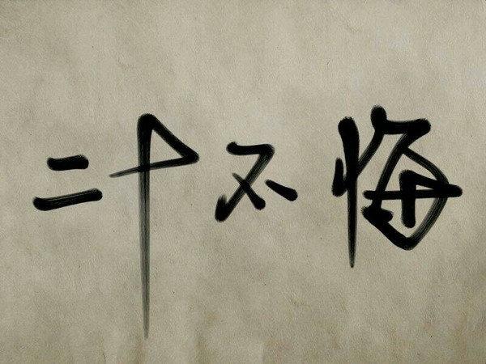

晚上在家刷知乎，看到周筠老师自己的专栏文章1里引用到罗曼罗兰的这句话：
大部分人在二三十岁就死去了，因为过了这个年龄，他们只是自己的影子，此后的余生则是在模仿自己中度过，日复一日，更机械，更装腔作势的重复他们在有生之年的所作所为
我就突然想到了我开始接触互联网、认识了很多人以后，回家时见到的场景。小镇上所有的人都像是老旧的、发黄的录影带，总是在枯燥无味的，不停的，重复着循环播放：垂暮的老头拄着拐杖不停的絮叨，老妇女们对着麻将桌不住的欢呼。唯一变化的就是，拐杖逐渐的变成了轮椅，麻将桌也慢慢变成了全自动麻将桌。”家里的时间好像走的格外格外的慢” 我跟自己说。
我在大学里也有过这样的感受，坦诚的说：在大学里遇到的一切，一度让我对未来很绝望。那时候的感受就是：周围的每个人都麻木不仁，浑浑噩噩,不知道自己是什么，要做什么。。跟环境反抗了很多次，未果，我觉得很生气，于是改了个QQ签名：”我觉得这些人都提前死掉了”，然后发挥啊Q疗法，称所有人为傻逼，于是就爽了。
然后因为好玩，我就自己去捣鼓各种乱七八糟的东西，看乱七八糟的书，参加各种奇怪的比赛，比如说”数学建模”,”飞思卡尔”,之类的比赛，去打打酱油，获了几个小奖，但没什么实际目的，无非是为了摆脱自己濒临绝望的状态，仅此而已。最后来到美团实习，才算是与旧的一切告别，开始新的生活。我记得那时候，虽然实习工资很低，但我每天6点多来公司，晚上11点回家，还是觉得很开心，大概是因为那时候视野突然被打开，每天都抑制不住的欣喜吧，那时候还比较年轻（虽然现在也不大），当时看到知乎上盗盗的回答2，居然还哭了一顿：
当时张小龙问了我一句，从小家教是否十分严格；我说，恩，是的，家里人从小把我管的很严，有些时候会比较内向和缺乏自信。（这是事实，校招阶段，所有的面试过程中，我表面上都很平和，实际上内心有时会出现那么一点的小自卑，因为当时应届生能进腾讯基本上都是985、211这样子的名校，而我当时只是江西师范大学这样一个很没有名气的小本科生；而且同台竞技的研究生也居多）。然后张小龙开始回忆说，他曾经跟我一样，十分的不自信，但是在寻找成长的过程，他过去的那些种经历反而造就了他谦逊、冷静、不骄不躁的性格以及做事风格。然后，他继续跟我比划说他相信我过去这种处于劣势的性格会伴随着我的成长和自信，终有一天会跟压迫中的弹簧一样反跳的更高，从而成为优势。
事后我想，为什么我当时即改变不了环境？而环境却也无法改变我？
我当时觉得可能是因为我自己也没太想清楚什么是对的，所以我说服不了别人，而因为当时我是对的，别人所以也无法改变我。现在想来，没有对错，一切只是因为我们从小生长的环境不同，只是我们的价值观不一样，我们都无法变成彼此价值观内觉得OK的人，我们终究是要走不同路的，所以不必强求就是。
余华的书里3有这样一句话，我看了至今都深以为然：
很久以来，我始终有一个十分固执的想法，我觉得一个人成长的经历会决定其一生的方向。世界最基本的图像就是这时候来到一个人的内心深处，如同复印机似的，一幅又一幅地复印在一个人的成长里。在其长大成人以后，不管是成功，还是失败；不管是伟大，还是平庸；其所作所为都只是对这个最基本图像的局部修改，图像的整体是不会被更改的。当然，有些人修改的多一些，有些人修改的少一些。
我觉得我是很幸运的人，虽然限于父母的职业和视野的局限，没有让我过上富裕的生活，但从小也勉强算是衣食无忧，虽然没有从小博览群书，但父母的教育培养了我读书的习惯。从小的孤独和狭窄的视野反而随着我不断的在工作中见识到了更多的新东西，反而更加加倍的刺激了我的好奇心，迫使我继续学习下去，一路走来，还是需要去感谢很多人的，我不能教他们所失望。
如果一个人需要让自己发生改变，其实很难，但若有强烈的渴望和意愿，日益精进，必能不断进步，让自己上升到新的高度。最近略有懈怠，翻盘自省一番，干活去了。
参考
1、摘自周筠知乎专栏： 大多数人在二三十岁上就死去了
2、摘自余华 十个词汇里的中国
3、知乎用户盗盗的回答：腾讯的张小龙是一个怎样的人?
修订
- 20150417 添加微信二维码
- 20150417 换了个微信二维码
其它
欢迎扫描二维码订阅我的微信公众号